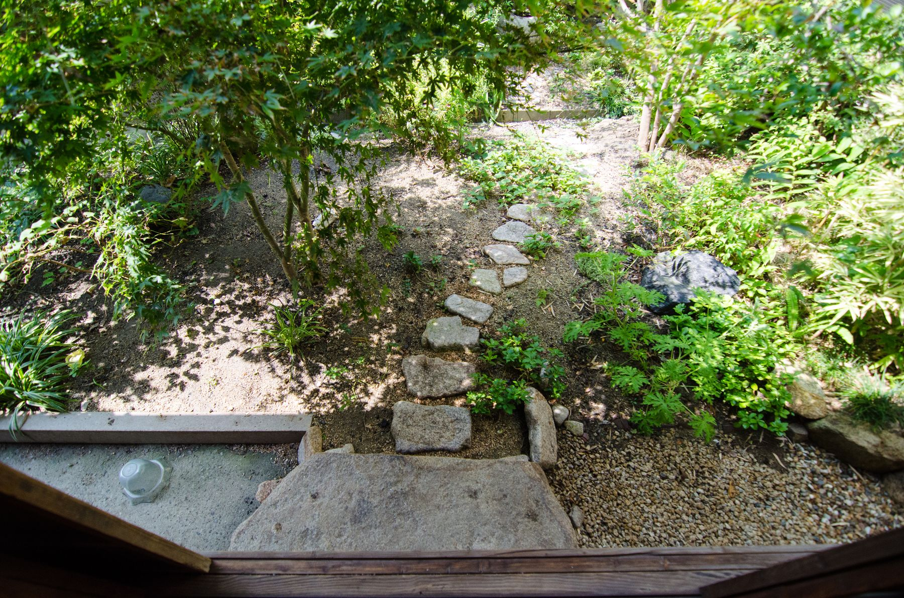
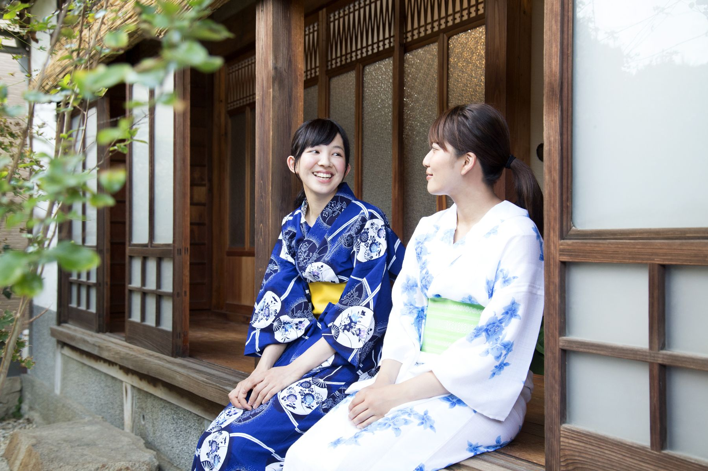

汐見の家について
瀬戸内海に浮かぶ佐島の、築百年を越えた古民家です。

この家のこと
汐見の家は、オーナーの祖父の実家です。母の旧姓が汐見。それがそのまま宿の名前になりました。
2012年4月、空き家になって久しいこの家を処分するため、30年ぶりに佐島を訪れました。ところがしまなみ海道の美しさとこの家の佇まいに心を打たれ、1年半迷った末に、再生へ舵を切ることにしたのです。
そこから1年かけて手立てを探し、さらに1年半かけて第一期の改修を終え、開業を迎えたのが2016年4月でした。遠距離、知識無し、お金無しの三重苦のなか、人に助けていただくほか方法がありませんでした。再生の記録は読み物にまとめてあります。
「汐見」という名は、この家に生まれ、13歳で単身アメリカへ渡って医師になった日系一世、ロバート・一（ハジメ）・汐見に由来します。彼の生涯も読み物にしました。
料金
- 宿泊料
- 素泊り 1泊 5,500円小学生は半額、乳幼児1人まで無料
- 一棟貸し
- 1泊 30,000円
- シェアごはん
- 夕飯 1,600円
朝飯 700円 - 定員
- 7名超える場合や長期滞在はご相談ください
- チェックイン
- 15:00チェックアウト 10:00
- お問い合わせ
- 0897-72-9800

過ごし方
何をするでもなく、縁側に座って庭を眺めている方が多いです。ピアノを弾く方、井戸を汲んでみる方、五右衛門風呂を自分で焚く方（前日までにご相談ください）もいます。
夕方になると、台所からシェアごはんの支度の音が聞こえてきます。
お願いしていること
- チェックイン・アウト
- 15時と10時が目安です。事前におおよその時間をご連絡ください。
- 門限
- ありません。ただし静かな集落にあり、20時を過ぎると静まり返ります。就寝中のお客さまや近隣のご迷惑にならないよう、静かな出入りをお願いします。
- お部屋
- 襖で仕切られた和室に布団を敷きます。相部屋で始めた宿ですが、いまは原則としてグループごとの個室です。
- 使える時間
- シャワー、ドライヤー、洗面台、キッチン、掘りごたつの間、玄関土間は6時〜24時。洗濯機は22時までにお願いします。
- 宿帳
- ご住所などは当日ご記帳いただきます。
庭のこと
庭のデザインは関晴子さん（Studio Lasso Ltd）によるものです。庭の写真は嶋谷元さんに撮っていただきました。
この家の再生は、たくさんの方に助けられて進みました。お名前は Special Thanks にまとめてあります。

泊まりに来ませんか
空室のご確認とご予約はこちらから。お電話でも承ります。